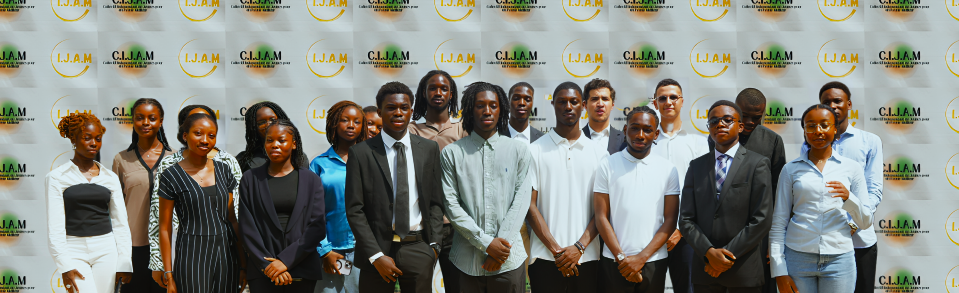

AKWABA
Venez à la rencontre de la nouvelle génération de leaders politiques
Bienvenue au Collectif Indépendant de Jeunes pour un Avenir Meilleur (C.I.J.A.M). Cette organisation neutre et autonome rassemble des jeunes de 15 à 19 ans, sans affiliation politique. Son objectif est de promouvoir l'engagement des jeunes dans les discussions relatives aux décisions stratégiques en matière de développement et aux orientations politiques qui façonneront l'avenir de la Côte d'Ivoire, conformément aux aspirations des générations actuelles. Nous aspirons à démontrer à la jeunesse son rôle crucial dans les processus décisionnels, car, pour nous, la politique concerne l'ensemble de la société, y compris la jeunesse.
